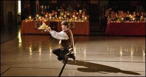

|
Diners treated to sights, sounds, taste of medieval era By Teri
T. Thomason, Features Editor

Each course served at the Renaissance Feast is presented for approval by the royalty. The new monarch for the 2006 Alabama Renaissance will be-chosen during this year's feast. A coin will be hidden in one of the desserts and served to those willing to serve as king or queen for the year. JIM HANNON/File FLORENCE -- The Renaissance was a time of rebirth. Everything was changing, from art and literature to architecture and trends. The Florence-Lauderdale Coliseum will also undergo a transformation Saturday, Oct. 15, when the Roundtable of the Alabama Renaissance Faire sponsors the 19th annual Renaissance Feast. The feast takes place the weekend before the faire, which is scheduled for Saturday and Sunday, Oct. 22-23 in Fountain on the Green, otherwise known as Wilson Park. Lords and ladies -- and even peasants -- will have a chance to taste a true sampling of medieval food from a cook who knows his stuff. "Our premier chef, Jim Matterer, is returning to prepare our feast," said Billy Ray Warren, of the Roundtable. "It's going to be an Italian medieval feast this year." Matterer is the founder of Gode Cookery. He travels throughout the United States attending and cooking for events sponsored by the Society for Creative Anachronism, an organization that celebrates 17th-century history. This is the fifth year that Matterer has planned and prepared the meal for the Renaissance Feast in Florence. He even has a link to the Alabama Renaissance Faire on his Web site, www.godecokery.com. Also on his Web site, Matterer provides visitors with recipes from his new cookbook, "A Boke of Gode Cokery, Vol. 1." For those new to the world of medieval cooking, Matterer provides instructions on how to cook medieval, recipes for the beginner, recipe translations, as well as a bit of history behind the Renaissance. Matterer also sells Goode Cookys. According to his Web site, small cakes or wafers were the predecessors of our modern cookie. During the Middle Ages and Renaissance, these cookies were created in a variety of shapes, sizes and designs, produced by hand-carved molds that depicted images of saints, elements of daily life and motifs of the time. In this tradition, Goode Cookys are handmade from historical molds and bring to life the elaborate and decorative cakes, wafers and gingerbread of the Middle Ages. Matterer's Cookys have become popular items at Renaissance events. Transformation Food will not be the only attraction for those attending the feast, even though they will get more than their fill. "We've actually had people say, 'Don't bring me anymore food. I'm tired of chewing,' " said Warren. The coliseum will be transformed into a medieval setting thanks to the help of Roundtable volunteers. Don Green is just one of those many volunteers helping create a Renaissance feel to the site. "We'll have new walls this year," he said, "that will close in the coliseum a bit and make the whole setting a little more intimate." Green is building the framework for the setting. The frame, made of PVC pipe, will hold a canvas that will be painted on each side to resemble a medieval scene. The frame can be dismantled and stored until time for the next feast. "It's a monstrous undertaking," Warren said. "It has 780 joints in the whole frame." The reigning monarch will also have new thrones to sit upon this year. "Donna Mitchell and her husband, Dave, are recovering the thrones for the king and queen," Warren said. "They live in Little Rock, but attend the faire each year and have been members of the Roundtable." Also in the spirit of the occasion, participants are invited to dress in period-costumes. "Costumes are admired, but not required," Green said. Those attending are also invited to come early Saturday to decorate their tables for the event. They may bring their own tableware. Candelabras, however, must be battery-operated, as fire regulations prohibit the use of open flames in the coliseum. This year's reigning queen, Salana Letsinger, will select the best-decorated table at the feast. Murder mystery Entertainment is ongoing during the time of the feast. There will be traveling musicians, dancing, various readings, plus a new twist this year. "We're going to have a murder mystery this year," said Donna Miles, a Roundtable member. "I won't tell you anything else about it, because it's a big surprise." Miles did divulge that it would be a story woven through the evening. The script is being written by Scott Holden. "He has written several murder-mystery dinners," said Miles. "And we have more than 15 participants so far, and there will be some audience participation as well." The audience will also be invited to mingle among the crowd during the evening and also to take part in the dance. "People love to get involved," said Green. "I would have thought that no one would have gotten up to participate, but they all get up now." Young and old Tickets to the feast are $20. Only 200 tickets, however, will be sold. The Roundtable encourages all ages to attend the family event. "We have all ages attend the feast, as well as the faire," said Green. "We have small children to grandparents." Tickets are available at the Kennedy-Douglass Center for the Arts Annex and Anderson's Bookland in downtown. The following recipes are from the Modern Recipes for Beginners link at www.godecookery.com. Matterer said these recipes are not true medieval dishes, but they are "medieval in style, ingredients and flavor, and for those cooks not ready to attempt true medieval cooking, these recipes may be the way to begin." These recipes have not been tested by the TimesDaily. A HOT MULLED CIDER
Place the ginger and spices in a cheesecloth bag; add to saucepan. Heat to boiling; reduce heat. Simmer, uncovered, 15 minutes. Remove spice bag. Stir in brandy. Serve warm in chafing dish or heat-proof punch bowl. Serves 36 (½ cup each). A SIMPLE PIE
Mix the beef and onion thoroughly with the gravy and place in pie shell. Top with cheese. Bake at 350 degrees until pastry is brown and cheese is bubbly. Serve hot or cold. APPLES NORMANDY
Add the brown sugar and cinnamon. Cook until sugar is dissolved; add orange juice, rind and brandy. Cook until sauce thickens. Serve plain or garnished with walnuts. Yield: 35-40. Teri Thomason can be reached at teri.thomason@timesdaily.com or 740-5742. This page © 2006 Gode Cookery http://www.godecookery.com
|

BACK TO: Alabama Renaissance Faire
A Boke of Gode Cookery Alabama
Renaissance Faire
Alabama
Renaissance Faire
© James L. Matterer
Please visit The Gode Cookery Bookshop